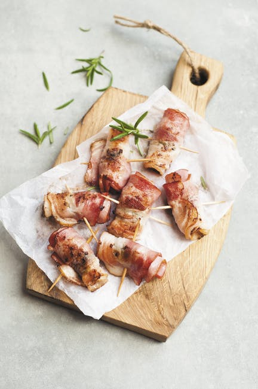
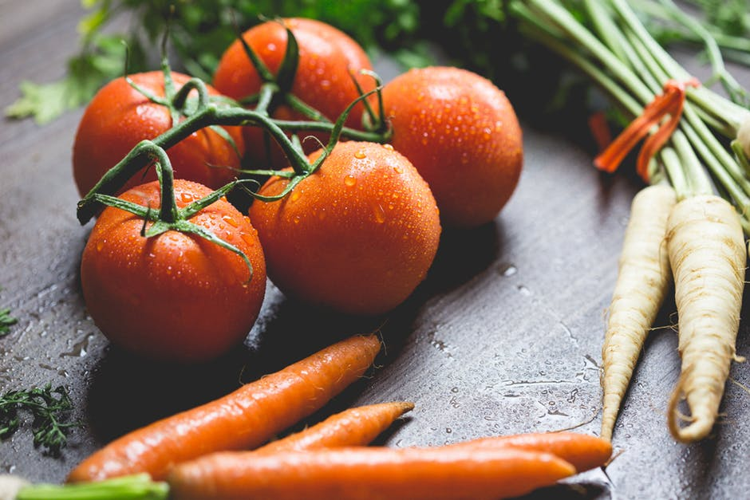
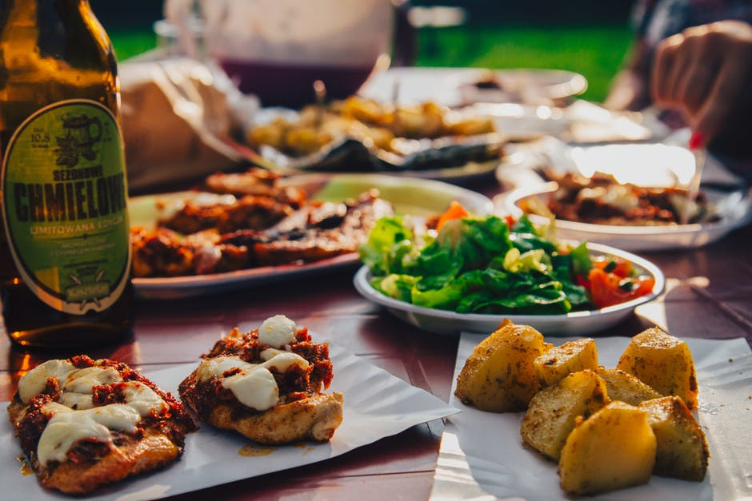
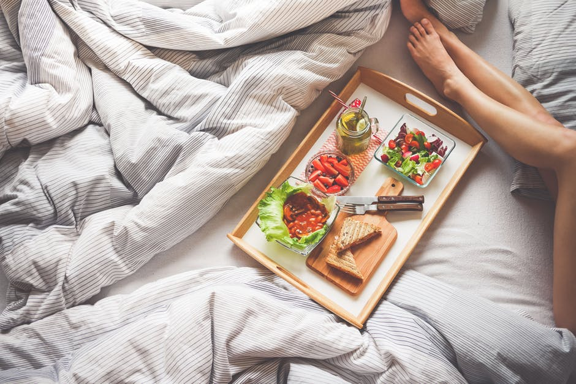
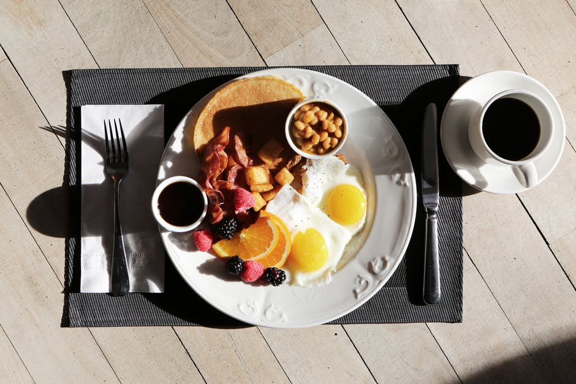

J'adore

Parę słów o mnie
Po raz pierwszy otworzyłem oczy w latach dziewięćdziesiątych...
Od tamtej pory nie mogę przestać się przyglądać.
A przyglądam się czujnie i rzetelnie.
Czujna obserwacja rzeczywistości stała się moją pracą. Liczy się każdy detal i mikrosekunda.
Każdy dzień przynosi nowe obrazy. Fotografia jest mi potrzebna do życia jak jedzenie.
Z połączenia tych pasji powstało - foodography.

Projekty
Moje przykładowe projekty.




KONTAKT
Oto gdzie pracuję
Spotkajmy się i porozmawiajamy o projekcie